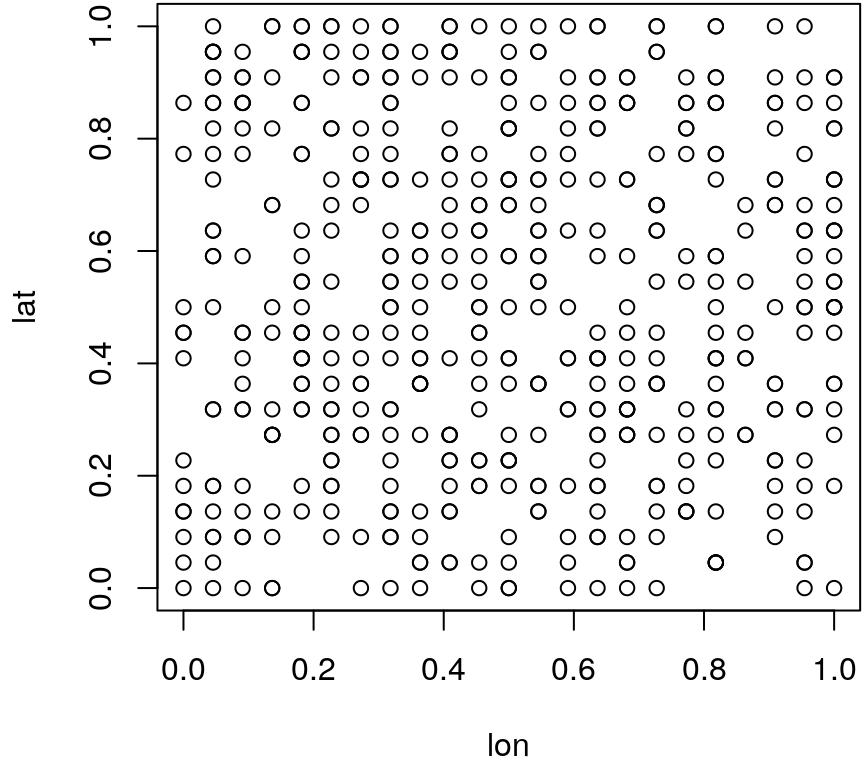
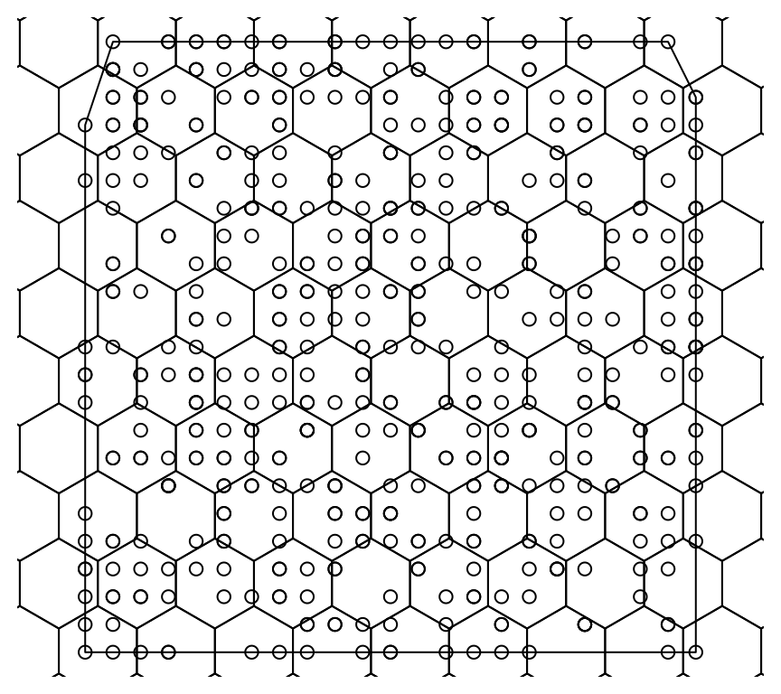
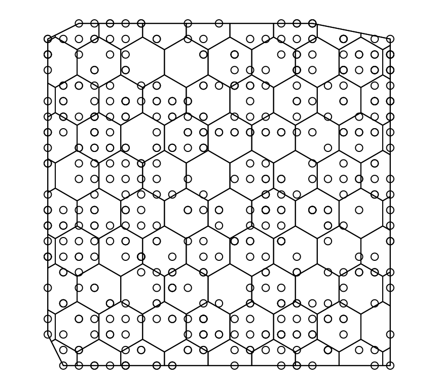

terms.RmdThe bamlss package heavily builds upon the R package mgcv (Wood 2019) infrastructures, i.e., all model terms that are provided by mgcv can also be used in bamlss. As a consequence, it is also possible to write user defined model terms using the generic smooth.construct()method of mgcv. Moreover, users can in principle even extent this, writing model terms beyond mgcv framework. However, this is a bit more technical and assumes that the user has a good basic knowledge of the internal structure of the package and is only very briefly discussed in this article.
To give an overview of users not familiar with mgcv, the following table lists some model specifications using R’s formula syntax:
| Description | Formula |
|---|---|
| Linear effects \(\mathbf{X}\boldsymbol{\beta}\) | ~ x1 + x2 + x3 |
| Nonlinear effects of continuous covariates \(f(\mathbf{x}) = f(x_1)\) | ~ s(x1) |
| Two-dimensional surfaces \(f(\mathbf{x}) = f(x_1, x_2)\) |
~ s(x1,x2), ~ te(x1,x2) or ~ ti(x1,x2) (higher dimensional terms possible) |
| Spatially correlated effects \(f(\mathbf{x}) = f_{spat}(x_s)\) |
~ s(xs,bs="mrf",xt=list(penalty=K)), where xs is a factor indicating the discrete regional information and K is a supplied penalty matrix. Other options within the xt argument are possible, please see the documentation of smooth.construct.mrf.smooth.spec()
|
| Varying coefficients \(f(\mathbf{x}) = x_1f(x_2)\) | ~ s(x2,by=x1) |
| Spatially varying effects \(f(\mathbf{x}) = x_1f_{spat}(x_s)\) or \(f(\mathbf{x}) = x_1f(x_2, x_3)\) |
~ s(xs,bs="mrf",xt=list(penalty=K),by=x1), ~ s(x2,x3,by=x1) or ~ te(x2,x3,by=x1)
|
| Random intercepts with cluster index \(c\): \(f(\mathbf{x}) = \beta_c\) |
~ s(id,bs="re"), where id is a factor of cluster indices |
| Random slopes with cluster index \(c\): \(f(\mathbf{x}) = x_1\beta_c\) |
~ s(id,x1,bs="re"), as above with continuous covariate x1
|
Note that each model term constructor has an argument called bs, which specifies the type of basis that should be used for modeling. For more details on the smooth constructors, please visit the mgcv manual pages of s(), te() and ti().
To better introduce the standard types of model terms we use simulated data that is part of the bamlss package. The data contains of a couple of different response types and is usually used for internal tests, only.
## num pnum bnum cnum bin cat cens eta
## 1 0.341704542 2.317364 0.6462574 65 yes high 1.50241790 0.313833175
## 2 -0.373302161 1.602357 0.3009252 30 no none 0.00000000 -0.207359234
## 3 0.007432787 1.983092 0.4848116 48 no low 0.00000000 0.006957129
## 4 0.163871126 2.139531 0.5603679 56 yes medium 0.07999916 0.152055884
## 5 -0.096522673 1.879137 0.4346035 43 no low 0.91605636 -0.195067241
## 6 0.505487688 2.481147 0.7253611 73 yes high 1.28712357 0.668382608
## x1 x2 x3 fac id lon lat err
## 1 0.2875775 0.35360608 0.2736227 high 1 0.3181818 0.8636364 0.0278713673
## 2 0.7883051 0.36644144 0.5938669 medium 2 0.6363636 0.3636364 -0.1659429266
## 3 0.4089769 0.28710013 0.1601848 medium 3 0.2727273 0.3636364 0.0004756581
## 4 0.8830174 0.07997291 0.8534302 medium 4 0.5909091 0.9090909 0.0118152420
## 5 0.9404673 0.36545427 0.8477392 high 5 0.4090909 0.7272727 0.0985445686
## 6 0.0455565 0.17801381 0.4778868 medium 6 0.6818182 0.3636364 -0.1628949195The first column holding variable num is a Gaussian response, all subsequent columns up to variable cens are basically transformations of variable num. Variables x1 to lat are covariates, which we use for illustrating how to set up the different model terms in the following.
Let’s start with a simple example using three covariates for a Gaussian model with possible nonlinear influence on the response distribution. The model formula can be specified by
Note that the default basis function type in mgcv are thin plate regression splines (Wood 2003) using k = 10 basis functions per default. Setting k = 10 is reasonable in most cases, but this may not be enough for very complex functional forms.
The type of basis in mgcv is selected with the bs argument. There are a number of different basis types readily available, from P-splines (Eilers and Marx 1996) to Markov random fields, this is documented on the mgcv manual page ?smooth.terms. Setting up the smooth terms is relatively straightforward when already known one. For example, if one is interested in specifying interaction terms, e.g., with main effects and interaction using two covariates, we could do the following using tensor product splines
Here, we use a functional decomposition of the effects of covariates x1 and x2 in the first formula. Note again that the number of basis function within ti() is again small, k = 5. The reason is, that constructing tensor product model terms can easily end up with thousands of parameters, i.e., these type of model terms need to be specified with care.
Markov random fields (MRF) can be used to model spatially correlated effects using discrete locational observations. However, setting up MRFs can be a bit tricky, so I would like to illustrate the process with a short example. In the simulated data from above, we artificially sample from spatial locations, see the plot of the coordinates
 Let’s suppose we only have the coordinates of the locations. Sure, we could directly model the spatial effect using some 2D smoother, e.g., with thin plate regression splines. In most situations spatial information is available as region identifier, but for illustrating the full path, it is a good exercise to start from exact locations. Now, either we have a map available, or we can create polygon grid over the observations, e.g., a hexagonal grid using the spdep and rgeos package
library("spdep")
library("rgeos")
## First, create convex hull of points.
i <- chull(as.matrix(d[, c("lon", "lat")]))
co_hull <- d[i, c("lon", "lat")]
## Create spatial polygon object.
hullpoly <- SpatialPolygons(list(Polygons(list(Polygon(co_hull)), ID=1)))
## Expand the polygon just slightly to have all points
## within hexagonal polygons later.
hullpoly_large <- gBuffer(hullpoly, width = 0.3)
## Sample from large polygon 200 hexagonal polygons.
pts <- spsample(hullpoly_large, n = 200, type = "hexagonal", offset = c(0.5, 0.5))
## Create final polygons.
hexpolys <- HexPoints2SpatialPolygons(pts)
## Does not produce a nice map yet.
par(mar = rep(0.5, 4))
plot(hullpoly)
plot(hexpolys, add = TRUE)
points(d[, c("lon", "lat")]) Now, note that the hexagonal polygons do not intersect correctly with the polygon of the convex hull. To achieve this, we again need the rgeos package
## Intersect with convex hull polygon.
hexpolys <- gIntersection(hullpoly, hexpolys, byid = TRUE, drop_lower_td = TRUE)
## Plot the intersections.
par(mar = rep(0.5, 4))
plot(hullpoly)
plot(hexpolys, add = TRUE)
points(d[, c("lon", "lat")]) We only need to assign polygon ID’s to the individual observations in the data frame to set up a MRF smooth.
d$ID <- over(SpatialPoints(d[c("lon", "lat")]), hexpolys)
## Note, over() only returns the index of the polygons,
## but for the MRF we need the polygon names.
d$ID <- as.factor(names(hexpolys)[d$ID])
head(d)## num pnum bnum cnum bin cat cens eta
## 1 0.341704542 2.317364 0.6462574 65 yes high 1.50241790 0.313833175
## 2 -0.373302161 1.602357 0.3009252 30 no none 0.00000000 -0.207359234
## 3 0.007432787 1.983092 0.4848116 48 no low 0.00000000 0.006957129
## 4 0.163871126 2.139531 0.5603679 56 yes medium 0.07999916 0.152055884
## 5 -0.096522673 1.879137 0.4346035 43 no low 0.91605636 -0.195067241
## 6 0.505487688 2.481147 0.7253611 73 yes high 1.28712357 0.668382608
## x1 x2 x3 fac id lon lat err
## 1 0.2875775 0.35360608 0.2736227 high 1 0.3181818 0.8636364 0.0278713673
## 2 0.7883051 0.36644144 0.5938669 medium 2 0.6363636 0.3636364 -0.1659429266
## 3 0.4089769 0.28710013 0.1601848 medium 3 0.2727273 0.3636364 0.0004756581
## 4 0.8830174 0.07997291 0.8534302 medium 4 0.5909091 0.9090909 0.0118152420
## 5 0.9404673 0.36545427 0.8477392 high 5 0.4090909 0.7272727 0.0985445686
## 6 0.0455565 0.17801381 0.4778868 medium 6 0.6818182 0.3636364 -0.1628949195
## ID
## 1 1 ID128
## 2 1 ID68
## 3 1 ID65
## 4 1 ID130
## 5 1 ID104
## 6 1 ID69However, there is still a small problem, because not all coordinates could be assigned to polygons. Unfortunately we get some NA’s
## [1] 3To get around this, we could use a slightly increased convex hull and intersect once more with the hexagonal polygons.
hexpolys <- HexPoints2SpatialPolygons(pts)
hexpolys <- gIntersection(gBuffer(hullpoly, width = 0.05),
hexpolys, byid = TRUE, drop_lower_td = TRUE)
## Note again, over() only returns the index of the polygons,
## but for the MRF we need the polygon names.
d$ID <- over(SpatialPoints(d[c("lon", "lat")]), hexpolys)
## No more NA's.
sum(is.na(d$ID))## [1] 0## [1] "buffer ID14" "buffer ID15" "buffer ID16" "buffer ID17" "buffer ID18"
## [6] "buffer ID19"## Ok, we need to modify the names a bit.
pn <- gsub("buffer ID", "", pn)
## Set up new ID variable with names.
d$ID <- as.factor(pn[d$ID])To set up the final MRF smooth we need to construct the neighborhood information from the polygons. This can be done, e.g., by defining polygons as neighbors, that share a common border.
Now, the neighborhood object nb can be used to construct the MRF penalty matrix that can be passed to the smooth constructor
## Compute 0/1 neigbhbormatrix.
P <- nb2mat(nb, style = "B")
## Off diagonal entries are -1, diagonal entries
## count the number of neighbors for each region.
nn <- colSums(P)
P <- P * -1
diag(P) <- nn
## Set row and column names as in the identifier variable.
rownames(P) <- colnames(P) <- pnFinally, this penalty matrix can be used so set up the MRF smooth term. However, this will still give an error, because due to the expansion of the convex hull, a couple of polygons do not have any observations, i.e., the dimension of the penalty matrix P will be too large at the moment, since not all polygon names are assigned levels in the ID variable in our data frame. To fix this we need to fill up the missing levels.
## Smooth specification object.
st <- s(ID, bs= "mrf", xt = list("penalty" = P))
## Design and penalty constructor.
str(smoothCon(st, data = d, knots = NULL))## List of 1
## $ :List of 22
## ..$ term : chr "ID"
## ..$ bs.dim : int 115
## ..$ fixed : logi FALSE
## ..$ dim : int 1
## ..$ p.order : logi NA
## ..$ by : chr "NA"
## ..$ label : chr "s(ID)"
## ..$ xt :List of 1
## .. ..$ penalty: num [1:115, 1:115] 2 0 0 0 0 0 0 0 0 -1 ...
## .. .. ..- attr(*, "call")= language nb2mat(neighbours = nb, style = "B")
## .. .. ..- attr(*, "dimnames")=List of 2
## .. .. .. ..$ : chr [1:115] "14" "15" "16" "17" ...
## .. .. .. ..$ : chr [1:115] "14" "15" "16" "17" ...
## ..$ id : NULL
## ..$ sp : NULL
## ..$ X : num [1:500, 1:115] 0 0 0 0 0 0 0 0 0 0 ...
## .. ..- attr(*, "dimnames")=List of 2
## .. .. ..$ : chr [1:500] "1" "2" "3" "4" ...
## .. .. ..$ : chr [1:115] "x100" "x101" "x102" "x103" ...
## .. ..- attr(*, "assign")= int [1:115] 1 1 1 1 1 1 1 1 1 1 ...
## .. ..- attr(*, "contrasts")=List of 1
## .. .. ..$ x: chr "contr.treatment"
## ..$ plot.me : logi FALSE
## ..$ S :List of 1
## .. ..$ : num [1:115, 1:115] 0.25 -0.0833 0 0 0 ...
## .. .. ..- attr(*, "dimnames")=List of 2
## .. .. .. ..$ : chr [1:115] "100" "101" "102" "103" ...
## .. .. .. ..$ : chr [1:115] "100" "101" "102" "103" ...
## ..$ rank : int 114
## ..$ null.space.dim: int 1
## ..$ knots : Factor w/ 115 levels "100","101","102",..: 2 3 4 5 6 7 8 9 10 11 ...
## ..$ df : int 115
## ..$ te.ok : num 2
## ..$ noterp : logi TRUE
## ..$ side.constrain: logi TRUE
## ..$ C : num [1, 1:115] 0 0.004 0.006 0.014 0.018 0.016 0.002 0.01 0.018 0.008 ...
## ..$ S.scale : num 12
## ..- attr(*, "class")= chr [1:2] "mrf.smooth" "mgcv.smooth"This type of model term is basically a random intercept and slope term, where the functional type might be nonlinear, e.g., this type of term is heavily used in joint models for longitudinal and survival data (Köhler et al. 2017; Köhler, Umlauf, and Greven 2018). Fortunately, using the mgcv package it is not very difficult to set them up. Using the artificial data from above, together with our newly created region identifier from the MRF example, we can set up a functional random intercept using numeric variable x1 and factor variable ID with
where all nonlinear functions are modeled with P-splines (Eilers and Marx 1996). One needs to be a little bit careful with the number of basis functions in the ti() smooth constructor since this can easily end up in thousands of parameters and problems with memory might occur (also, depending on the number of levels in the factor variable, here ID).
Eilers, P. H. C, and B. D. Marx. 1996. “Flexible Smoothing Using B-Splines and Penalized Likelihood.” Statistical Science 11: 89–121. https://doi.org/10.1214/ss/1038425655.
Köhler, Meike, Nikolaus Umlauf, Andreas Beyerlein, Christiane Winkler, Anette-Gabriele Ziegler, and Sonja Greven. 2017. “Flexible Bayesian Additive Joint Models with an Application to Type 1 Diabetes Research.” Biometrical Journal 59 (6): 1144–65. https://doi.org/10.1002/bimj.201600224.
Köhler, Meike, Nikolaus Umlauf, and Sonja Greven. 2018. “Nonlinear Association Structures in Flexible Bayesian Additive Joint Models.” Statistics in Medicine 37 (30): 4771–88. https://doi.org/10.1002/sim.7967.
Umlauf, Nikolaus, Nadja Klein, Achim Zeileis, and Thorsten Simon. 2021. bamlss: Bayesian Additive Models for Location Scale and Shape (and Beyond). https://CRAN.R-project.org/package=bamlss.
Wood, Simon N. 2003. “Thin Plate Regression Splines.” Journal of the Royal Statistical Society. Series B (Statistical Methodology) 65 (1). [Royal Statistical Society, Wiley]: 95–114. https://doi.org/10.1111/1467-9868.00374.
Wood, S. N. 2019. mgcv: GAMs with Gcv/Aic/Reml Smoothness Estimation and Gamms by Pql. https://CRAN.R-project.org/package=mgcv.